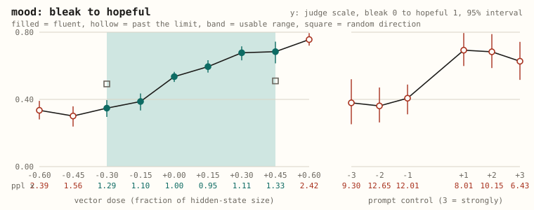
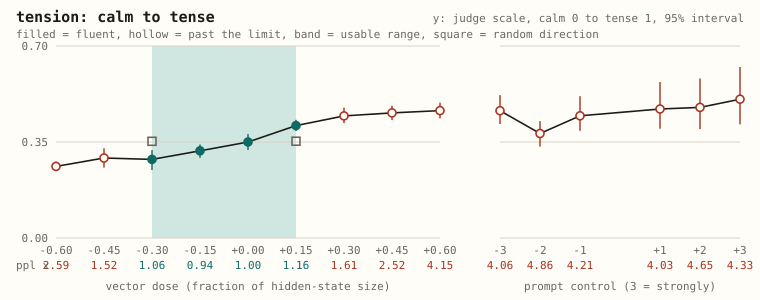
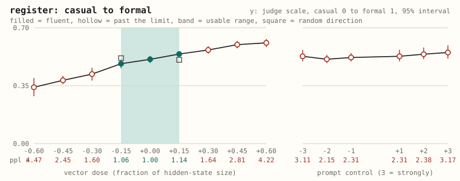
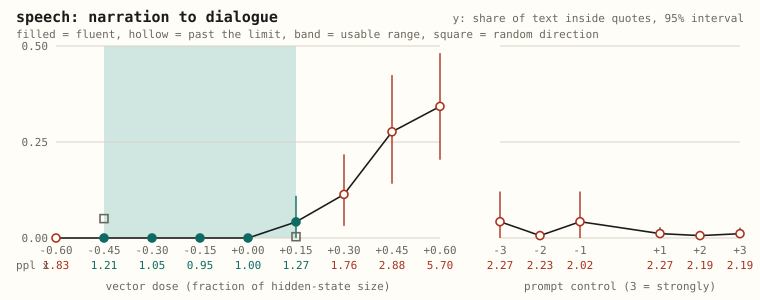

Kemudi
Steering knobs for a local language model. Each knob adds a direction to the model's internal
state while it writes, with no instruction in the prompt, and each one ships with a measurement
of what it does to the text and the dose at which the text breaks.
Kemudi is Indonesian for a steering wheel or a rudder.
What you get
- Four knobs for a story the model is writing:
mood(bleak to hopeful),tension(calm to
tense),register(casual to formal) andspeech(narration to dialogue). - What the measurement found: mood works, tension and register work in a narrow range, and
speech shows no clear effect inside its green band. The tension judge failed one later check.
The tables below show all of it. - They act while the model writes. Move a slider and the next words change. Nothing is added
to the prompt and nothing is regenerated. - A green band on every slider: the doses that were measured to keep the text fluent. Past
the band the app warns you before you get there. - A measured note under every slider: the change at the nearest measured dose with its 95%
interval, or "no clear effect" where there was none. With two knobs on, the app says what was
measured for that pair. - A gauge per knob that reads the model's own state along that direction, word by word.
- "Compare with zero": the same opening and the same random seed, written with and without
your knobs, side by side. - It runs on your computer. The model is Qwen2.5-0.5B-Instruct (about 1 GB, Apache-2.0), on
the CPU. No account, no API key, no data leaves the machine.
Start it
On Windows, double-click Start Kemudi.cmd. On macOS or Linux, run ./start-kemudi.sh. Both
need Python 3.10 or newer on the machine. The first start installs Python packages and
downloads the model once (about 1.3 GB together), then opens the app in your browser. CI runs
both scripts at every push, on Windows, Linux and macOS: a fresh machine installs, downloads
the model, the app answers and a steered sentence is written.
By hand, on any system with Python 3.10 or newer:
pip install torch --index-url https://download.pytorch.org/whl/cpu
pip install -e .
kemudi serve --open
In the terminal, without the app:
kemudi say "The lighthouse keeper climbed the stairs" --knob mood=0.3 --knob speech=0.3
The model is stored in ~/.cache/kemudi. Set KEMUDI_HOME to keep it somewhere else.
What was measured
Sixteen story openings that took no part in building the vectors were each continued for 48
tokens at nine doses per knob, always with the same random seed, so the only difference between
two doses is the vector. The unsteered model then scored every text. A dose is a fraction of the
typical size of the model's internal state at the block where the vector is added: dose 0.3
adds a vector 30% as long as that state.
| Axis | Block | Held-out AUC | Judge AUC | Usable doses | Effect at dose 0 | Vector, usable range | Random direction, same doses | Prompt, fluent levels | Rank corr. |
|---|---|---|---|---|---|---|---|---|---|
| mood (bleak to hopeful) | 14 | 0.95 | 0.914 | -0.30 to +0.45 | 0.54 | 0.35 to 0.68 | 0.49 to 0.51 | none | 0.816 |
| tension (calm to tense) | 14 | 0.97 | 0.945 | -0.30 to +0.15 | 0.35 | 0.29 to 0.41 | 0.35 to 0.35 | none | 0.645 |
| register (casual to formal) | 14 | 1.00 | 1.000 | -0.15 to +0.15 | 0.51 | 0.48 to 0.54 | 0.52 to 0.51 | none | 0.475 |
| speech (narration to dialogue) | 14 | 1.00 | counted | -0.45 to +0.15 | 0.00 | 0.00 to 0.04 | 0.05 to 0.00 | none | 0.279 |
Two rows need a warning before they are read, both from checks made after this table (see
"Checks added after the first release"):
- tension: its judge passed the check in this table and then failed on fresh sentences
(0.863 against the 0.90 limit). By this project's own rule the tension effect is
not validated by that judge. Blind raters, who do not use the judge, picked the intended text
at both ends. - speech: no clear effect inside its usable range, in the paired check and in the blind
rating. The app says so under the slider.
How to read it:
- Block: which of the model's 24 blocks the vector is added after.
- Held-out AUC: how well the direction separates hand-written sentences of the two poles
that had no part in building or choosing it. 1.0 is perfect, 0.5 is chance. - Judge AUC: how well the instrument that scores the effect separates those same sentences.
This is a check the judge had to pass, not an independent validation: the judge was chosen
on these sentences (see "What changed on the way"). An AUC depends only on the order of the
scores, so setting the judge's zero point on half of the sentences does not raise it. The
held-out figure for the judge is in "How it works", step 5. Speech needs no judge: quotation
marks are counted. - Usable doses: the widest range around zero where the text passes two limits fixed in
advance: perplexity at most 1.5 times that of dose 0, and at least 85% of the distinct word
pairs of dose 0 (a repetition check). Perplexity says how surprising the unsteered model
finds a text; fluent text scores low and broken text scores high. - Effect: for mood, tension and register a 0 to 1 scale on which 0.27 is a typical
hand-written sentence of the low pole and 0.73 one of the high pole. For speech it is the share
of characters inside quotation marks. - Vector, usable range: the effect at the two ends of the usable range.
- Random direction, same doses: a random vector of the same length, at right angles to the
real one, added at the same block. It shows what a push of that size does when it points
nowhere in particular. - Prompt, fluent levels: the style requested in the system prompt and no vector, counted
only at levels that pass the same two limits.nonemeans no level passed. - Rank corr.: Spearman correlation between dose and effect over every text inside the
usable range.
What the numbers say
- mood (bleak to hopeful): inside the usable range the vector moves the effect from 0.35 at dose -0.30 through 0.54 at zero to 0.68 at dose +0.45. A random direction at the same two doses gives 0.49 and 0.51. The prompt control reaches 0.36 and 0.69 at its best levels, with a perplexity ratio between 6.4 and 12.6, so no level passes the fluency limit. Over the whole grid, fluent or not, the vector takes the effect from 0.34 at dose -0.60 to 0.76 at dose +0.60.
- tension (calm to tense): inside the usable range the vector moves the effect from 0.29 at dose -0.30 through 0.35 at zero to 0.41 at dose +0.15. A random direction at the same two doses gives 0.35 and 0.35. The prompt control reaches 0.38 and 0.51 at its best levels, with a perplexity ratio between 4.0 and 4.9, so no level passes the fluency limit. Over the whole grid, fluent or not, the vector takes the effect from 0.26 at dose -0.60 to 0.46 at dose +0.60.
- register (casual to formal): inside the usable range the vector moves the effect from 0.48 at dose -0.15 through 0.51 at zero to 0.54 at dose +0.15. A random direction at the same two doses gives 0.52 and 0.51. The prompt control reaches 0.51 and 0.55 at its best levels, with a perplexity ratio between 2.1 and 3.2, so no level passes the fluency limit. Over the whole grid, fluent or not, the vector takes the effect from 0.34 at dose -0.60 to 0.61 at dose +0.60.
- speech (narration to dialogue): inside the usable range the vector moves the effect from 0.00 at dose -0.45 through 0.00 at zero to 0.04 at dose +0.15. A random direction at the same two doses gives 0.05 and 0.00. The prompt control reaches 0.01 and 0.01 at its best levels, with a perplexity ratio between 2.0 and 2.3, so no level passes the fluency limit. Over the whole grid, fluent or not, the vector takes the effect from 0.00 at dose -0.60 to 0.34 at dose +0.60.
Three things follow, and one of them is not flattering:
- Mood is the strong knob; tension and register work in a narrower range. For all three
the effect rises with the dose inside the usable range, and a random direction of the same
size leaves it near the dose-0 value. Mood covers the most ground, tension less, and register
least: its curve keeps rising over the whole grid, but the text stops being fluent beyond
a dose of 0.15 either way, so only a small part of that curve is usable. None of the three
covers the full distance between a typical low sentence (0.27) and a typical high one (0.73)
while staying fluent. - Speech is the weak knob. Unsteered, this model wrote no dialogue at all for these
openings. The vector does produce dialogue (see the chart), yet most of that happens past
the perplexity limit, so the usable range ends early and the effect inside it is small. The
limit treats any text the unsteered model finds unlikely as broken, and dialogue is
unlikely to a model that would not have written it. The limit was fixed before measuring
and was not changed afterwards. Read every dose in docs/samples.md and
judge for yourself. - The prompt control fails on this model, for a plain reason. Many of its texts are the
control instruction handed back and not a story:
| Axis | Vector, all doses | Random direction | Prompt control, all levels |
|---|---|---|---|
| mood | 0 of 144 | 0 of 32 | 33 of 96 |
| tension | 0 of 144 | 0 of 32 | 24 of 96 |
| register | 0 of 144 | 0 of 32 | 12 of 96 |
| speech | 0 of 144 | 0 of 32 | 6 of 96 |
These texts are included in the prompt control's effect and perplexity numbers above.
A text counts here when it contains CONTROLS or the axis name followed by a colon. This
count was added after reading the texts, to explain the perplexity numbers; it is a
description and was not planned. It says that a 0.5B model cannot follow a control block in
its prompt. It does not say that vectors beat prompts in general: a large model follows such
prompts well, and no large model was measured here.
   
In each chart the left panel is the vector and the right panel is the prompt control, on one
shared scale. Filled points pass the fluency limits, hollow points do not, the band is the
usable range, the squares are the random direction and the row of numbers under the axis is the
perplexity ratio.
The same curves as numbers: the mean effect at every dose with its 95% bootstrap interval over
the 16 texts. A star marks a dose that fails a fluency limit.
| Dose | mood | tension | register | speech |
|---|---|---|---|---|
| -0.60 | 0.34 (0.28 to 0.39) * | 0.26 (0.24 to 0.28) * | 0.34 (0.29 to 0.40) * | 0.00 (0.00 to 0.00) * |
| -0.45 | 0.30 (0.24 to 0.36) * | 0.29 (0.26 to 0.33) * | 0.38 (0.36 to 0.41) * | 0.00 (0.00 to 0.00) |
| -0.30 | 0.35 (0.30 to 0.40) | 0.29 (0.25 to 0.32) | 0.42 (0.38 to 0.46) * | 0.00 (0.00 to 0.00) |
| -0.15 | 0.39 (0.33 to 0.44) | 0.32 (0.29 to 0.34) | 0.48 (0.45 to 0.51) | 0.00 (0.00 to 0.00) |
| +0.00 | 0.54 (0.50 to 0.56) | 0.35 (0.32 to 0.38) | 0.51 (0.49 to 0.53) | 0.00 (0.00 to 0.00) |
| +0.15 | 0.59 (0.56 to 0.63) | 0.41 (0.39 to 0.43) | 0.54 (0.52 to 0.56) | 0.04 (0.00 to 0.11) |
| +0.30 | 0.68 (0.63 to 0.72) | 0.45 (0.42 to 0.48) * | 0.57 (0.54 to 0.59) * | 0.11 (0.03 to 0.22) * |
| +0.45 | 0.68 (0.61 to 0.74) | 0.46 (0.43 to 0.48) * | 0.60 (0.58 to 0.62) * | 0.28 (0.14 to 0.42) * |
| +0.60 | 0.76 (0.72 to 0.79) * | 0.46 (0.44 to 0.49) * | 0.61 (0.58 to 0.63) * | 0.34 (0.20 to 0.48) * |
Read with the intervals, the claims get smaller:
- mood: the intervals at both usable ends (0.30 to 0.40 and 0.61 to 0.74) lie clear of the
interval at dose 0 (0.50 to 0.56). Below -0.30 the curve stops falling. - tension: the high end (0.39 to 0.43) lies clear of dose 0 (0.32 to 0.38); the low end
(0.25 to 0.32) touches it. - register: the intervals at both usable ends (0.45 to 0.51 and 0.52 to 0.56) overlap the
interval at dose 0 (0.49 to 0.53). Only the two ends are clear of each other. - speech: the interval at the usable high end (0.00 to 0.11) includes the dose-0 value of 0.
Those are intervals of each mean on its own. Every dose used the same 16 openings and the same
seed, so the fairer comparison is per opening: the change from dose 0 at each usable end, with
a 95% bootstrap interval over the 16 changes. This check was added after the measurement
(python tools/paired_check.py). It scores the stored texts again and first confirms that it
gets the stored means back.
| Axis | Dose | Mean change from dose 0 | 95% interval of the change | Openings that moved the intended way |
|---|---|---|---|---|
| mood | -0.30 | -0.187 | -0.257 to -0.128 | 15 of 16 |
| mood | +0.45 | +0.149 | +0.066 to +0.220 | 15 of 16 |
| tension | -0.30 | -0.063 | -0.095 to -0.037 | 15 of 16 |
| tension | +0.15 | +0.060 | +0.026 to +0.095 | 13 of 16 |
| register | -0.15 | -0.026 | -0.048 to -0.009 | 14 of 16 |
| register | +0.15 | +0.032 | +0.017 to +0.050 | 14 of 16 |
| speech | -0.45 | +0.000 | +0.000 to +0.000 | 0 of 16 |
| speech | +0.15 | +0.042 | +0.000 to +0.110 | 3 of 16 |
Per opening, mood, tension and register move the intended way at both usable ends, and none of
those six intervals includes zero. Register's change is small, about 0.03 on the 0 to 1 scale.
Speech shows no change inside its usable range: nothing at -0.45, and at +0.15 only 3 of 16
openings gain dialogue and the interval starts at zero. These are eight comparisons, with no
correction for making eight of them.
paired.json holds the same check at all eight non-zero doses, and the app shows it under
each slider. Mood, tension and register have a clear effect at every one of them. Speech has
none at any dose inside its usable range; its first clear dose is +0.30, which is past the band.
The same opening at three doses
One evaluation opening, the first in the list, continued with the same seed at dose 0 and at
both ends of each usable range. It was not chosen for effect; all 16 openings at every dose are
in samples.json, and the first one at every dose is in docs/samples.md.
mood (bleak to hopeful), usable -0.30 to +0.45
-0.30she stood in the hallway and looked around helplessly. Each door and window had their locks relocked, except for the one leading to the bathroom. She couldn't move the door, but she couldn't escape either. She screamed in agony+0.00she reflected on her decision. She had been feeling anxious for a while now, the tension between her and her partner, as she adjusted her expression of concern. She knew she couldn't stay locked out for too long, but the thought of+0.45she could hear the soft murmur of footsteps from the door at the other end of the hallway, catching her breath. She smiled as she recognized the familiar scent of fresh baked bread wafting from the bakery across the street. Her
tension (calm to tense), usable -0.30 to +0.15
-0.30thought, holding her breath. She took a deep breath, calming her heart. The room was quiet, except for the gentle rustling of the leaves outside the window. The familiar scent of fresh bread wafted through the air, inviting+0.00she reflected on her decision. She had been feeling anxious for a while now, the tension between her and her partner, as she adjusted her expression of concern. She knew she couldn't stay locked out for too long, but the thought of+0.15she desperately searched for clues that might lead her to the exit. Each door to the basement was a dead end, and the only way out was through the back door of the kitchen, which was blocked by a heavy wooden door. Suddenly
register (casual to formal), usable -0.15 to +0.15
-0.15she opened her eyes, feeling a sudden rush of anger. She realized she had left the door open, just like the one she used for such an important project. She took a deep breath, feeling guilty and scared. She didn't know+0.00she reflected on her decision. She had been feeling anxious for a while now, the tension between her and her partner, as she adjusted her expression of concern. She knew she couldn't stay locked out for too long, but the thought of+0.15she reflected on the encased rooms, each one a silent witness to the absence of light. The hallway echoed with the ticking of time, a rhythm that seemed to pulse in harmony with the weight of her own thoughts. She moved through the
speech (narration to dialogue), usable -0.45 to +0.15
-0.45Locked, as usual. The hallway was empty. She had decided to stay in the kitchen for the week-long vacation, but she was using a basement apartment. It was the first time she had stayed in her home since moving into a new+0.00she reflected on her decision. She had been feeling anxious for a while now, the tension between her and her partner, as she adjusted her expression of concern. She knew she couldn't stay locked out for too long, but the thought of+0.15she reflected on her decision. Had she been too hard on herself? Had she overreacted? She couldn't remember. She'd been such an idiot, she thought. Her heart pounded in her chest, and she felt like she'd
Checks added after the first release
Four checks were added after the first release. For each one the pass rule was written into the
tool before it ran, and the result is shown here whether it passed or not. None of them changed
a number in the tables above.
The judge on sentences it had never seen
The judge's zero point and unit were set on half of the labelled sentences in
kemudi/data/axes.json, and its check used the other half. python tools/judge_fresh.py scores
48 new sentences per judged knob (24 per pole) with the judge and those numbers frozen. The
sentences are in tools/fresh_sentences.json. They were written by three hosted language models
other than the one being steered, after the judge was fixed, and all 144 were kept. Rule: an AUC
of at least 0.90, the limit the main measurement uses.
| Axis | Fresh sentences | AUC on fresh sentences | Accuracy with the frozen zero point | AUC on the first labelled set | Passes (AUC at least 0.90) |
|---|---|---|---|---|---|
| mood | 48 | 0.948 | 0.833 | 0.914 | yes |
| tension | 48 | 0.863 | 0.708 | 0.945 | no |
| register | 48 | 0.995 | 0.958 | 1.000 | yes |
Mood and register pass. Tension does not: 0.863 on the fresh sentences against 0.945 on the
first set, with 71% of the fresh sentences on the correct side. By the rule of the main
measurement a judge below 0.90 means "effect not validated". The tension numbers in the tables
above are left as measured and should be read with this in mind: the tension judge is weaker
than its first check said. The blind rating below is a second look at the same texts that
does not use this judge.
Blind rating
python tools/blind_rating.py make pairs each dose-0 text with the steered text for the same
opening and seed, at both ends of each knob's usable range: 128 pairs in a shuffled order, with
the dose hidden. The rater answers one question per pair, for example "Which text is more
hopeful?". Rule: a knob end passes when the majority of the raters picks the intended text in at
least 12 of 16 pairs. Chance does that about 4 times in 100.
No person has rated the texts yet. The three raters so far are hosted language models other
than the one being steered, reached through a private gateway. Each saw the pairs and never the
key. To add a human rating, run python tools/blind_rating.py ask yourname and then
python tools/blind_rating.py score. The pairs, the key and the answers are in docs/rating.
| Axis | Dose | Rater 1 | Rater 2 | Rater 3 | Majority | Passes (12 of 16) |
|---|---|---|---|---|---|---|
| mood | -0.30 | 15 of 16 | 15 of 16 | 14 of 16 | 15 of 16 | yes |
| mood | +0.45 | 13 of 16 | 13 of 16 | 12 of 16 | 13 of 16 | yes |
| register | -0.15 | 14 of 16 | 14 of 16 | 14 of 16 | 15 of 16 | yes |
| register | +0.15 | 12 of 16 | 14 of 16 | 12 of 16 | 13 of 16 | yes |
| speech | -0.45 | 9 of 16 | 9 of 16 | 10 of 16 | 8 of 16 | no |
| speech | +0.15 | 11 of 16 | 12 of 16 | 12 of 16 | 11 of 16 | no |
| tension | -0.30 | 12 of 16 | 14 of 16 | 13 of 16 | 13 of 16 | yes |
| tension | +0.15 | 14 of 16 | 14 of 16 | 13 of 16 | 14 of 16 | yes |
Mood, tension and register pass at both ends. Speech fails at both: at -0.45 the majority
picked the intended text in 8 of 16 pairs, which is what chance gives, and at +0.15 in
11 of 16. That agrees with the paired check, which found no clear speech effect inside its
usable range. For tension, whose judge failed above, raters that never used that judge picked
the intended text in 13 and 14 of 16 pairs. The raters are language models, so this is a
second opinion from models and not a human one.
The rule of 12 of 16 does not correct for making eight tests. With a Bonferroni correction the
bar would be 14 of 16, and 3 of the 6 passing ends reach it (mood -0.30, register -0.15, tension +0.15).
This stricter reading was added after the rating and is not the pre-set rule.
Two knobs together
The usable ranges above were measured with one knob on. python tools/pair_knobs.py turns on
two: for each of the six pairs, the four corners where each knob sits at one end of its own
usable range, with the same 16 openings, seed and settings (24 corners, 384 texts, in
pairs_samples.json). Rules: a corner is fluent under the two limits of the main measurement,
and a knob still works next to another when, at each end of the other knob, the paired
difference between its own high end and its own low end has a 95% interval above zero.
| Knobs | Fluent in all four corners | Highest perplexity ratio | Lowest distinct-2 ratio |
|---|---|---|---|
| mood + tension | no | 2.47 | 0.98 |
| mood + register | no | 2.24 | 0.98 |
| mood + speech | no | 2.08 | 0.96 |
| tension + register | yes | 1.30 | 0.99 |
| tension + speech | no | 1.73 | 0.98 |
| register + speech | no | 1.51 | 0.99 |
| Knob | Next to | High end minus low end, alone | Other knob at its low end | Other knob at its high end | Still works |
|---|---|---|---|---|---|
| mood | tension | +0.336 (+0.276 to +0.407) | +0.311 (+0.243 to +0.374) | +0.304 (+0.246 to +0.359) | yes |
| tension | mood | +0.123 (+0.084 to +0.166) | +0.071 (+0.044 to +0.102) | +0.070 (+0.037 to +0.100) | yes |
| mood | register | +0.336 (+0.276 to +0.407) | +0.308 (+0.237 to +0.385) | +0.307 (+0.245 to +0.369) | yes |
| register | mood | +0.058 (+0.037 to +0.082) | +0.078 (+0.051 to +0.105) | +0.093 (+0.054 to +0.130) | yes |
| mood | speech | +0.336 (+0.276 to +0.407) | +0.331 (+0.278 to +0.387) | +0.299 (+0.240 to +0.367) | yes |
| speech | mood | +0.042 (+0.000 to +0.110) | +0.003 (+0.000 to +0.008) | +0.229 (+0.102 to +0.381) | no |
| tension | register | +0.123 (+0.084 to +0.166) | +0.086 (+0.048 to +0.126) | +0.076 (+0.040 to +0.109) | yes |
| register | tension | +0.058 (+0.037 to +0.082) | +0.067 (+0.049 to +0.084) | +0.038 (+0.013 to +0.066) | yes |
| tension | speech | +0.123 (+0.084 to +0.166) | +0.114 (+0.084 to +0.147) | +0.112 (+0.076 to +0.152) | yes |
| speech | tension | +0.042 (+0.000 to +0.110) | +0.118 (+0.041 to +0.206) | +0.143 (+0.070 to +0.225) | yes |
| register | speech | +0.058 (+0.037 to +0.082) | +0.083 (+0.056 to +0.114) | +0.058 (+0.032 to +0.086) | yes |
| speech | register | +0.042 (+0.000 to +0.110) | +0.147 (+0.042 to +0.269) | +0.000 (+0.000 to +0.000) | no |
The green bands do not add up. Only tension with register stays fluent in all four
corners. Over the six pairs, 12 of the 24 corners are fluent, and every corner with mood at
+0.45 is past the perplexity limit (ratios from 1.51 to 2.47). Repetition is not the
problem: the lowest distinct-2 ratio is 0.96.
The effect itself survives. Mood, tension and register still work next to every other knob, by
the rule above. Tension's effect is smaller next to mood (+0.07 against +0.12 alone) and stays
clear. Speech depends on its neighbour: it passes next to tension only, and it does not pass
alone either.
In practice: with two knobs on, stay well inside both bands, or use tension with register.
The app shows what was measured for the pair you have turned on. Only the corners were
measured. Doses inside the bands with two knobs on, and three or more knobs together, were not.
A second machine
kemudi reproduce was run from an empty folder on a second machine: a GitHub-hosted Linux
runner (workflow reproduce.yml, started by hand) with Ubuntu 26.04, an AMD EPYC processor
with 4 cores, Python 3.12 and torch 2.15.0. The published numbers come from a Windows 10 laptop
with an Intel processor, Python 3.13 and the same torch version. The run took 1 hour 12
minutes. No pass rule was set in advance: this is a report. The files that run produced are
in docs/second_machine, and python tools/compare_reproduce.py docs/second_machine gives:
Vectors
| Vector | Cosine with the shipped one | Largest difference in one number |
|---|---|---|
| mood | 1.000000 | 5.85e-07 |
| tension | 1.000000 | 9.91e-07 |
| register | 1.000000 | 4.62e-07 |
| speech | 1.000000 | 7.53e-07 |
Generated texts
| Axis | Texts | Same as shipped, to the letter |
|---|---|---|
| mood | 272 | 272 |
| tension | 272 | 272 |
| speech | 272 | 272 |
| register | 272 | 272 |
Published numbers
600 numbers compared, 590 equal, 10 different, 0 present on one side only.
- mood: usable range [-0.3, 0.45] shipped, [-0.3, 0.45] fresh; held-out AUC 0.953 and 0.953; largest move of a dose effect 0.0000
- tension: usable range [-0.3, 0.15] shipped, [-0.3, 0.15] fresh; held-out AUC 0.969 and 0.969; largest move of a dose effect 0.0000
- register: usable range [-0.15, 0.15] shipped, [-0.15, 0.15] fresh; held-out AUC 1.0 and 1.0; largest move of a dose effect 0.0000
- speech: usable range [-0.45, 0.15] shipped, [-0.45, 0.15] fresh; held-out AUC 1.0 and 1.0; largest move of a dose effect 0.0000
| Largest differences | Shipped | Fresh |
|---|---|---|
/axes/mood/prompt/2/effect_ci/1 |
0.4882 | 0.4881 |
/axes/tension/steering/4/effect_ci/1 |
0.3789 | 0.3788 |
/axes/mood/prompt/3/effect |
0.6929 | 0.693 |
/axes/speech/gauge_mid |
-0.528063 | -0.52806 |
/axes/tension/gauge_mid |
0.517654 | 0.517652 |
/axes/register/gauge_mid |
0.238046 | 0.238047 |
/axes/speech/gauge_half |
0.492824 | 0.492824 |
/axes/register/gauge_half |
1.19809 | 1.19809 |
/axes/mood/gauge_mid |
-0.0721107 | -0.0721108 |
/axes/tension/gauge_half |
0.687407 | 0.687407 |
All 1,088 generated texts are the same to the letter. Of the 600 published numbers, 590 are
equal and 10 differ: three by 0.0001, in the fourth decimal, and seven gauge constants in the
sixth decimal or later. No usable range, no held-out AUC and no mean effect of a vector dose
moved. The vectors differ by less than 0.000001 in any one number.
This shows that the pipeline gives the same result on another processor and operating system
with the same torch version. It does not show what another torch version, a GPU or another
seed would give, and it is not a second sample.
How it works
- Find a direction. Sixteen story openings are each written under two opposite style
instructions, three wordings per pole, which gives 48 pairs per knob. The model's internal
state (the residual stream) is read over the opening's words. The vector is the mean
difference between the two poles at one block, scaled to length 1. - Choose the block on one half of a test set, score it on the other half. Each knob has 32
hand-written sentences, 16 per pole. The even-numbered ones choose the block among blocks 4
to 14 (20% to 60% of the depth): many blocks separate them equally well, so among those
within 0.02 of the best the one is taken where the two poles lie furthest apart relative
to the size of the state. The odd-numbered sentences give the held-out AUC in the table
(mood 0.95, tension 0.97, register 1.00, speech 1.00). All four knobs ended at block 14, the top of the allowed band. - Steer. While the model writes, a hook adds
dose x typical state size x vectorto the
output of that block at every position. The knob values are read at every token, which is
why a slider acts on the next word. - Measure. The effect, the perplexity and the repetition of every text are computed by the
same model with all knobs at zero. - Check the judge before trusting it. For mood, tension and register the effect is a
likelihood ratio: how much more likely the text is after "Everything you write is hopeful"
than after "Everything you write is bleak". That judge is first run on the 32 labelled
sentences. Its AUC there must be at least 0.9 or the knob is reported as not validated
(mood 0.914, tension 0.945, register 1.000). Its zero point and its unit come from the even-numbered sentences; on the
odd-numbered ones it then puts the sentence on the correct side this often: mood 0.94, tension 0.75, register 0.94.
One command reproduces everything: kemudi reproduce. It runs kemudi extract,
kemudi measure and kemudi report in that order. The published numbers were first made with
the three commands run separately (see "How the runs were made" below). Afterwards
kemudi reproduce was run once as a single command into an empty folder, on the same PC with
the same package versions. It took 1 hour 58 minutes on a laptop CPU that was busy with other
work, and it gave back the shipped vectors and calibration.json byte for byte, the same
1,088 texts and the same report files. That shows the pipeline repeats itself on one machine.
The run on a second machine is under "A second machine" above.
What was fixed in advance, and what changed on the way
Fixed before the measurement in the table was run: the 16 evaluation openings, the sampling
settings and seed, the two fluency limits (1.5 and 0.85), the 0.9 limit for the judge, the three
prompt-control strengths, and the random-direction control.
Changed on the way, in order:
-
Block rule and dose grid. The first version took the earliest block among the ties
(blocks 5 and 6) with doses up to 0.32. A look at 4 of the 16 evaluation openings showed
almost no change in the text. A pilot on the openings used for extraction (not the evaluation
ones) showed clear, fluent changes at block 14 and broken text at doses of 1 and 2. The block
rule became the one described above and the doses became -0.8 to 0.8. -
Finer doses. The first full run was stopped after two mood doses (perplexity ratios 2.39
and 3.21 at -0.6 and -0.8): the grid was too coarse to find where the text breaks. The doses
became -0.6 to 0.6 in steps of 0.15. -
The judge. The first judge asked the model a one-word question ("bleak or hopeful?").
On the labelled sentences it reached AUC 0.898 for mood and 0.844 for tension, below the 0.9
limit. The likelihood-ratio judge was then tried on the same labelled sentences only, with
the rule "use it if it reaches 0.9 on all three knobs", and it did. No steered text was
involved in that choice. -
The echo count above was added after the results, as said there.
-
The dose table and the paired check were added after the results, to state the
uncertainty as numbers. They changed no rule and no number in the results table. -
How the runs were made. To save time, mood and tension were measured in one process and
speech and register in a second one, with the same code, seed and settings. The second
process worked on a copy of the calibration, and its speech entry was merged in after
checking that the vectors were identical. That process died during register, after it had
printed its nine dose results and before it saved them. Register was then measured again from
scratch, and the nine dose results came out the same to four decimals. This shows that the
pipeline repeats itself on one machine. It is not a second sample. -
Four checks after the first release: the judge on fresh sentences, the blind rating, two
knobs together and the run on a second machine. Their rules were written before they ran,
and they changed no rule and no number in the results table.paired.jsonextends the paired
check from the two usable ends to every dose with the same code; the app reads it for the
note under each slider.
Kemudi and Spaceship
Spaceship by Chuanqi Sun is the idea this project
answers: a text editor where knobs steer the writing as it appears. Spaceship is an interface
study. Its knobs are written into the prompt as a CONTROLS block of text
(src/text/live-completion.ts), its axes come from a fixed list of nine from which the model
picks five (src/text/live-dimension.ts), its "attention" view asks the model to name one to
three key phrases and reads no attention weights (src/text/live-attention.ts), and it calls
hosted models (src/llm/cerebras.ts, src/llm/decisions.ts).
Kemudi is the other half: the knobs reach inside the model, and each one is measured.
| Spaceship | Kemudi | |
|---|---|---|
| What a knob changes | words in the prompt | the model's internal state at one block |
| Model | hosted, large | local, 0.5B parameters, CPU |
| Change while writing | regenerates from the prompt | acts on the next token |
| Evidence per knob | none in the repo | dose-response, usable range, two controls |
| Interface | rich editor with branching | one page with four sliders |
| Text quality | high (large model) | limited (small model) |
They complement each other. Spaceship shows what the interface could be; Kemudi shows what a
real knob costs and where it stops working. Kemudi's prompt control copies the form of
Spaceship's CONTROLS block and is not a test of Spaceship, which uses a far larger model.
Limits
- One small model. Everything here was measured on Qwen2.5-0.5B-Instruct. Nothing is
claimed for any other model. - Small sample. 16 openings, 48 tokens each, one random seed, English, story continuation
only. The intervals in the charts and in the dose table are bootstrap intervals over those 16
texts. - The judge is the model itself, and no person rated the texts. The judge passed its
check on hand-written sentences, and for tension it put only 75% of the held-out ones on the
correct side. On 48 fresh sentences the tension judge then fell below the 0.90 limit
(0.863), so the tension numbers rest on a weaker judge than the first check said.
Three other language models picked the intended text blind for mood, tension and register,
and not for speech. That is a second opinion from models. Single texts are scored loosely
and only averages should be read. - The judge is built like the prompt control (both are an instruction in the system
prompt). If that favours anything, it favours the prompt control. - The fluency limit punishes style change. Perplexity is counted against what the
unsteered model would write, so a strong and wanted change of style also counts against a
dose. The usable ranges are therefore cautious, most visibly for speech. - Some steered texts step out of the story. A keyword search (
continue the story,
continuation,exactly where,novelist) finds 11 of the 576 vector texts that talk about
continuing the story and do not continue it: 3 inside the usable ranges and 8 past them. The same
search finds none among the random-direction and prompt-control texts. These texts stay in
the averages. The count was made once, after the measurement, and no test checks it. - Bands are for one knob. At the corners of two bands the text stayed fluent for one pair
of six (tension with register). Doses inside the bands with two knobs on, and three or more
knobs together, were not measured. - Same software on both machines. The second machine had another processor, operating
system and Python version, and the same torch version. Another torch version, a GPU and
another seed were not tried. - Block 14 is the edge of the allowed band for all four knobs. Later blocks were not tried.
- The gauges are a readout, not a result. They show the model's state along the vector and
were not tested as a measure of the text.
Add a knob or a model
A knob is one entry in kemudi/data/axes.json: the two pole names, three style wordings per
pole, and 16 hand-written sentences per pole for the checks. Then:
kemudi extract
kemudi measure --axis yourknob
kemudi report
Another model: kemudi reproduce --model <repo id or local folder>.
It has to be a chat model that transformers can load, with its blocks at model.model.layers.
A new model gets its own folder in kemudi/calibrations and its own measurements; nothing is
carried over from the 0.5B model.
Development
pip install -e ".[dev]"
pytest
The tests run without the model: fake engines stand in for it, and one test checks that every
table, the sample texts and the echo count in this README are exactly what the shipped files
produce. A browser test drives the real page against the real server with a stand-in engine: the
note under each slider, the note for two knobs, and a knob moved while the text streams. It needs
python -m playwright install chromium once; without the browser it is skipped on your machine,
and in CI a missing browser fails the run. CI runs the tests and then starts the app with
the start scripts on Linux, macOS and Windows. python tools/mutation_check.py breaks the code in nine
places on a copy and confirms that the tests notice each one.
The follow-up tools are in tools: paired_check.py, judge_fresh.py, blind_rating.py,
pair_knobs.py and compare_reproduce.py. The first, second and fourth need the model. The files
the second machine produced are in docs/second_machine, and a test checks the comparison
table against them.
Licence and credit
MIT. The idea of steering knobs in a writing interface is Chuanqi Sun's
Spaceship. The method, difference-of-means
activation steering, comes from published interpretability work (Turner et al., "Activation
Addition", 2023; Rimsky et al., "Steering Llama 2 via Contrastive Activation Addition", 2023).
The model is Qwen2.5-0.5B-Instruct by Alibaba Cloud, Apache-2.0.